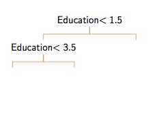
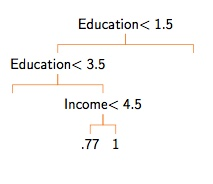

11 Machine Learning
11.1 Supervised Learning
11.1.1 The Gist
We want to build some function \(f(X)\) that explains/predicts/correlates with observed outcome \(y\).
- Note that the capital \(X\) denotes an entire dataset
- Typically we say that \(X\) is a n-by-d matrix, where n is the number of datapoints and d is the number of dimensions each datapoint has
A function, \(f(X)\), can be something simple like a line or something more complex.
We are going to use this function to:
- Predict \(y\) for a new \(x_hat\)
- Identify elements of \(X\) that seem important
- Explore interesting relationships
- Maybe for theory testing, but will need to be careful
11.1.2 What could go wrong?
Problem 1: Infinity is a big number - The are an infinite number of potential functions, \(f(\cdot)\). - We can’t try all possible functions. That problem isn’t clearly defined.
Problem 2: Not enough data - Even if we knew a subset of \(f(\cdot)\) to consider, we may not have enough data - If \(f(\cdot)\) is complex, can be particularly hard to approximate unless large \(n\)
Problem 3: What are the right features? - Even if we have some idea of \(f(\cdot)\) and a lot of data, we don’t always know the right features to include. - And in some cases there are a lot of features.
Problem 4: Is it signal or is it error? - A lot of outcomes we want to study are “noisy” - We are usually not interested in the noise - One way to think of this is that \(f(\cdot)\) can be divided into two compoenents * Systematic component * Error component
Example: The linear regression
\[f(X) = \underbrace{\beta_0 + \beta_1x_1 + \beta_2 x_2}_{systematic} + \underbrace{\epsilon}_{error}\] \[\epsilon \sim N(0, \sigma^2)\]
Problem 5: Putting it all together
- We don’t know if we have the right “set” of functions to consider.
- Even if we did, we don’t have infinite data.
- And we don’t even know if we are using the right features.
- So we can’t ever be sure we are separating out the systematic and error portions.
Problem 6: Meta problems - In many settings, the DGP is not static. - There may be unknown unknowns. - It is difficult or impossible to know if the data used to train your model is useful for the task at hand.
11.1.4 The complexity of keeping it simple
- Simple models can be good, especially with small samples.
- But more complex models might be better:
- Maybe a more flexible \(f(\cdot)\) than a line?
- Maybe more options for \(X\)?
- We want to aim for models that are:
- Complex enough to capture important aspects of reality
- Not so complex they confuse signal with noise
11.1.4.1 A new example
library(readr)
senateData<-read_csv("http://politicaldatascience.com/PDS/Datasets/SenateForecast/CandidateLevel.csv")This is data on US Senate elections from 1992-2016. - VotePercentage: Percentage of the vote for that candidate - Republican: 1=Republican, 0=Any other - Democrat: 1=Democrat, 0=Any other - Experienced: 1=Candidate has held elected office, 0=otherwise - weightexperience: 1 = no experience, 4=held statewide office - pvi: Presidential vote index (Higher values mean more friendly to Democrats) - Generic Ballot: Generic ballot polling for that candidate’s party in that year - Incumbent: -1 = Running against incument, 0=open seat, 1 = Is the incumbent - PercentageRaised: Percent of money for that race raised by that candidate
Model 1: Simple
SimpleModelFull<-lm(VotePercentage~pvi*Republican+Incumbent, data=senateData)
summary(SimpleModelFull)$r.squared## [1] 0.5895867Model 2: Complex
ComplexModelFull<-lm(VotePercentage~pvi*Republican+weightexperience
+ GenericBallotSept*Republican + Incumbent, data=senateData)
summary(ComplexModelFull)$r.squared## [1] 0.6457033Seems a little better
So what’s that mean?
Looks like the complex model is doing much better
But is that real, or illusory?
We can partially resolve that by doing a cross validation
Several ways to do this, but here is a very easy one.
- Divide your data into two parts, training and validation
- Fit your model on your training data
- Test on your validation data (the data you didn’t use to fit the model)
11.1.4.2 Cross Validation
library(rsample)
split_senateData<-initial_split(senateData, prop=.8)
senate_train<-training(split_senateData)
senate_test<-testing(split_senateData)Let’s look at those:
## [1] 665 14## [1] 165 14Let’s test out the simple model
SimpleModelTrain<-lm(VotePercentage~pvi*Republican+Incumbent, data=senate_train)
SimpleModelPredictions<-predict(SimpleModelTrain, newdata=senate_test)Now we will calculate the root mean squared error (RMSE) comparing the predictions, \(y^\ast\), with what we actually observed, \(y\).
\[RMSE=\sqrt{\frac{\sum_i^n(y_i^\ast-y_i)^2}{n}}\]
## [1] 8.411281Let’s do the same for the more complex model
- Fit the model
- Make predictions for the training set
ComplexModelTrain<-lm(VotePercentage~pvi*Republican+weightexperience
+ GenericBallotSept*Republican + Incumbent, data=senate_train)
ComplexModelPredictions<-predict(ComplexModelTrain, newdata=senate_test)## [1] 7.725798More on cross-validation
- One problem here is that the result may be somewhat sensitive to the particular way you partition your data. Maybe that 20% you pulled out were unusual?
- k-fold cross-validation tries to get around this by:
- Randomly dividing the data into k groups
- Each group serves as the test sample once
- So We have “out-of-sample” predictions for all cases
- You can also do Monte Carlo cross-validation, where you do this 90-10 random partitioning multiple times.
Summary
- There is a tension between complexity and predictive accuracy
- More complex models may better explain the data you have, but may do worse in prediction.
- Cross validation is a fundamental tool for addressing this dilemma.
11.2 Classification
11.2.1 Classification basics: Binary outcomes
The difference between regression and classification is that we look at a special type of function, \(f(X)\).
We want a function that will:
- Take in a dataset \(X\) that can take on all kinds of values (binary, continuous, etc.)
- But it will “squash” all of these features so that \(f(X) \in [0, 1]\).
- We then say that the probability that \(y=1\) is equal to \(f(x)\), or \[Pr(y=1) = f(x)\]
Intuitively, we are imagining a weighted coin flip where the pobability of a “success” is determined by \(f(x)\).
Motivating example: Turnout in the 2008 election
- Imagine we are trying to build a model to predict turnout (0 or 1)
- We have the following features:
- State
- Ethnicity (White/Black/Hispanic/Other)
- Age (Divided into quartiles)
- Income (Divided into quitiles)
turnout<-read.csv("http://politicaldatascience.com/PDS/Datasets/SimpleTurnout2008.csv")
dim(turnout)## [1] 73033 611.2.2 The linear classifier (AKA Logit)
- Logit is a member of a family of models called a “generalized linear model”
- These models have two basic parts:
- A linear component
- A squashing component
The linear part:
We might for instance, set up an equation of:
\[\Lambda=\beta_0 + \beta_1 \text{Income}+ \beta_2 \text{Age}\]
This is the same basic idea as normal regression models.
But this linear combination can take on any value between \(-\infty\) and \(\infty\) (depending on what the \(\beta\) values are)
\(\beta_0 = 16\)
\(\beta_1=2\)
\(\beta_2 = 1.5\)
Income = 2
Age = 2
\[23 = 16 + 2\times 2 + 1.5\times2\]
The squashing part:
But we can’t use numbers like 23 to talk about turnout directly.
And there is nothing keeping this from evaluating to -200 or 3,272
So the strategy will be to push \(\Lambda\) through a squasher
These are often shaped like an “s”, and are sometimes called a sigmoid.
I am going to notate this as \(\sigma(\cdot)\)
\[f(X) = \sigma(\Lambda)\]
The logistic squasher:
- A very common choice for \(\sigma(\cdot)\) is the logistic function:
\[\sigma(\Lambda) = \frac{1}{1+\exp(-\Lambda)} = \frac{\exp(\Lambda)}{1+\exp(\Lambda)}\]
myLogistic<-function(Lambda){
return(1/(1+exp(-1*Lambda)))
}
testValues<-seq(-8, 8, by=.1)
plot(testValues, myLogistic(testValues), type="l", ylab="Pred. Prob.")So let’s take a minute:
- Use the function from before and assume that:
\[\Lambda = -2 + (1 \times \text{Income}) + (0.7\times \text{Age}) \]
- What is \(\Lambda\) when Income=2 and Age=4?
- Put that through our squasher and find out what the predicted probability will be.
- Do both calculations again but now assume Income=4 and Age=4
In general,
- Do the linear part first to get \(\Lambda\).
- Then use the function
myLogisticto calculate the predicted probability.
11.2.2.1 The linear classifier in theory
- Remember what we are trying to do: find some function \(f(X)\).
- We have a linear portion like \(\beta_1 \text{Income}+ \beta_2 \text{Age}\)
- We put it through a squasher like the logistic function on Slide 9.
- When we combine this we get:
\[Pr(y=1) = \frac{\exp(\beta_0 + \beta_1 \text{Income}+ \beta_2 \text{Age})}{1+\exp(\beta_0 + \beta_1 \text{Income}+ \beta_2 \text{Age})} \]
- But how do we figure out the \(\beta\) coefficients?
11.2.2.2 The linear classifier in practice
- For this class we’ll use something maximum likelihood estimation.
- Basically, the computer will find the values of \(\beta\) that minimize a specific form of loss
- All you really need to know is how to do it.
- We use the
glmfunction. - We specify that the data is binary by using the
family="binomial"argument.
- We use the
##
## Call:
## glm(formula = turnout ~ inc + age, family = "binomial", data = turnout)
##
## Deviance Residuals:
## Min 1Q Median 3Q Max
## -2.1708 -1.2979 0.6462 0.9014 1.3915
##
## Coefficients:
## Estimate Std. Error z value Pr(>|z|)
## (Intercept) -1.273471 0.030836 -41.30 <2e-16 ***
## inc 0.398235 0.007284 54.67 <2e-16 ***
## age 0.384711 0.008255 46.60 <2e-16 ***
## ---
## Signif. codes: 0 '***' 0.001 '**' 0.01 '*' 0.05 '.' 0.1 ' ' 1
##
## (Dispersion parameter for binomial family taken to be 1)
##
## Null deviance: 90693 on 73032 degrees of freedom
## Residual deviance: 85681 on 73030 degrees of freedom
## AIC: 85687
##
## Number of Fisher Scoring iterations: 4A couple of takeaways:
- The coefficients reported here are from the linear part of the model.
- You want to focus on the sign of the coefficients
- And again you can get standard errors and p-values
- The AIC number is a fit statistic, and we want it to be small (but hard to interpret)
- We can use the same
predictapproach we used before.- If we don’t specify new data, it generates “in sample” predictions.
- You want to use the option
typeto make sure you get the predicted probability part back and not the linear part.
Let’s look at the predicted probabilities for each value of Age in the dataset.
Now it’s your turn:
- Fit your own linear classifier to this data using the data I’ve provided.
- You might try some new variables or even recoding a covariate if you want.
- Look at the output and make sure you understand what the coefficients are telling you (more or less).
11.2.2.3 Fit statistics
When we talked about regression, I emphasized the importance of out-of-sample testing to keep from “overfitting the data.”
- Complex models might seem to fit the data well, but do poorly out of sample.
- Ths reflects a model that is confusing the “systematic” part of the data with the “error” part of the data.
I introduced RMSE as a metric. But what should we use for binary cases?
There are a lot of choices here, and this is again a large topic I will only touch on.
The easiest place to start is a “confusion matrix”
\[\begin{array}{lcc} & \text{Truth=0} & \text{Truth=1}\\ \text{Prediction = 0} & \text{True negatives} & \text{False negatives}\\ \text{Prediction = 1} & \text{False positives} & \text{True Positives}\\ \end{array}\]
The main diagnonal of this matrix are your correct predictions.
Should you weight positives or negatives more?
- Depends on the context
- You will want to balance or weight.
One appproach is to look at precision and recall
- Precision \[\frac{\text{True positives}}{\text{True positives + False positives}}\]
- Recall \[\frac{\text{True positives}}{\text{True positives + False negatives}}\]
You can also recombine these in a bunch of ways to get things like false discovery rate, specificity, sensitivity, F1 scores, and more.
Another one is called the Brier Score, which is just RMSE. Let \(p_i\) be our predicted probabilty for unit \(i\).
\[\sqrt{\frac{\sum_i^n{(y_i-p_i)^2}}{n}}\]
Going back to turnout:
##
## binaryPred 0 1
## 0 4283 3809
## 1 18523 46418- This is the confusion matrix where columns are the “truth” and rows are the predictions
- Using this table and the formulas above, we can calculate the precision, recall, and accuracy (the percent of observations this model gets right)
11.2.3 More models
- Of course, logistic regression is only one way to build \(f(X)\). There are many more.
- Today I’ll introduce two pretty easy ones:
- Tree models (sometimes called decision trees)
- K-nearest neighbors
- Others you might look into include support vector machines, naive Bayes classifiers, neural networks, Gaussian process regression, and much, much, more.
- If you’re interested in learning about these, there’s tons of information on the internet, or you can take a introductory Machine Learning course.
11.2.3.1 Tree models
map





Here’s some code that will create a tree model for us.
## n= 73033
##
## node), split, n, deviance, yval
## * denotes terminal node
##
## 1) root 73033 15684.380 0.6877302
## 2) inc< 2.5 26982 6555.365 0.5839449
## 4) age< 2.5 11531 2881.491 0.4895499 *
## 5) age>=2.5 15451 3494.450 0.6543913 *
## 3) inc>=2.5 46051 8668.089 0.7485397
## 6) age< 1.5 8495 2044.887 0.5963508 *
## 7) age>=1.5 37556 6381.940 0.7829641 *- This tells us how the tree is constructed
- Better to look at it visually
Tuning parameters:
- Many ML models have tuning parameters, sometimes called hyperparamaters or hyperpriors.
- These are parameters that control how the function, but which typically are not estimated from the data.
- These are set by the analyst, often using some sort of cross-validation.
- Most often, these parameters control model complexity.
tree_mod2<-rpart(equation, data=turnout, control=rpart.control(cp=.0002))
plot(tree_mod2)
text(tree_mod1, use.n=TRUE, all = TRUE, cex=0.7)Complex or simple:
- Compare the accuracy of these two models using a confusion matrix.
- Do the same use the Brier score
- Now make your own tree using a different value of
cp.
11.2.4 Random forests
- These models sometimes do not end up performing very well.
- Especially when the relationship between variables is smooth and not discontinuous.
- And they can be very sensitive to seemingly small changes to the data.
11.2.4.1 Intuition for random forests
- One idea is to take advantage of this sensitivity by bootstrapping the sample to create many trees and average their predictions for each unit.
- Does better with smooth, additive functions, and on the whole less sensitive to small changes in the data.
- The model will:
- Randomly select rows of the data with replacement.
- Randomly select
mtryvariables from the dataset - Build a tree
- Repeat this
ntreetimes and average the results
11.2.4.2 Implementation for random forests
library(randomForest)
turnout$turnout<-as.factor(turnout$turnout) # Leave as continuous for regression
mod1_forest<-randomForest(equation, data=turnout,
ntree=201, mtry=2)
mod1_forest # This confusion matrix is "out of bag"##
## Call:
## randomForest(formula = equation, data = turnout, ntree = 201, mtry = 2)
## Type of random forest: classification
## Number of trees: 201
## No. of variables tried at each split: 2
##
## OOB estimate of error rate: 30.19%
## Confusion matrix:
## 0 1 class.error
## 0 3617 19189 0.84140139
## 1 2858 47369 0.0569016711.2.5 K Nearest Neighbors
- Another simple approach is just to look at observations that are “near” eachother.
- “Near” here just means that they have a similar in terms of their predictor variables.
map
11.3 Putting that in action
- Weird problem in this data is that there can be too many ties.
- So many observations share the same value.
- So (just for this example) I’ll add a bit of noise
library(class)
turnoutX<-turnout[,c("eth", "inc", "age")]
turnoutX$inc<-turnoutX$inc+rnorm(length(turnoutX$inc), 0, .001)
mod1_knn<-knn(turnoutX, test=turnoutX, cl=turnout$turnout, k=10)
table(mod1_knn, turnout$turnout)##
## mod1_knn 0 1
## 0 8123 4989
## 1 14683 45238